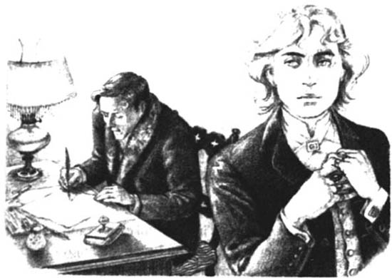

Listen to Part 1:

Dorian cầu cứu
Mãi chín giờ sáng hôm sau, Dorian mới thức dậy. Anh ta trông không giống một kẻ vừa giết bạn mình.
Nhưng khi vừa thức giấc, Dorian đã nhớ lại mọi chuyện vừa xảy ra. Anh ta cố không nghĩ về Basil. Anh ta cân nhắc hồi lâu xem phải mặc bộ đồ nào. Anh ta đeo nhẫn vào. Anh ta bỏ ra, đeo những chiếc nhẫn khác vào.
Dorian ăn sáng. Nhưng anh ta không thể quên đi cái xác của Basil đang ngồi trên bàn tại căn phòng áp mái. Cuối cùng, anh ta cũng viết được hai bức thư. Anh ta để một bức thư trong túi. Anh ta bảo người hầu đưa bức thư còn lại đến nhà Alan Campbell.
Dorian vào thư viện. Anh ta châm một điếu thuốc và cố không nghĩ đến Basil. Anh ta vẽ tranh. Nhưng anh ta cứ vẽ khuôn mặt Basil.
Anh ta đọc thơ. Nhưng bài thơ nào anh ta cũng liên tưởng đến Basil.
Tội nghiệp Basil, anh ta nghĩ. Thật là một cách chết kinh khủng. Dorian bắt đầu lo sợ. Anh ta nghĩ đến Alan Campbell. Biết đâu Alan Campbell sẽ không đến.
Alan Campbell là một nhà khoa học rất tài năng. Dorian và Alan Campbell đã là bạn tốt của nhau trong nhiều năm. Nhưng Alan đã không nói chuyện với Dorian trong mười tám tháng. Không ai biết tại sao họ không còn là bạn.
Listen to Part 2:
Giờ thì Dorian cần sự giúp đỡ của Alan.
Alan Campbell cuối cùng cũng đã đến. Anh ta có mái tóc đen và khuôn mặt trắng bệch. Trông anh ta rất buồn. Dorian vui mừng khi thấy anh.
Anh ta nói, "Alan, cảm ơn đã đến. Cảm ơn vì đã đến đây," trong lúc bắt tay.
Alan không có vẻ gì là vui mừng trước việc gặp lại Dorian. Anh ta nói, "Tôi không muốn đến chút nào. Tôi không bao giờ muốn nói chuyện với anh lần nào nữa. Nhưng trong thư, anh bảo chuyện này cực kỳ quan trọng, rằng đây là vấn đề sống còn.".
Dorian nói, "Chuyện này cực kỳ quan trọng." rồi nói một cách rất nhanh "Trên lầu có một người đàn ông đã chết. Cậu ta đã chết được khoảng mười tiếng rồi. Tôi cần anh làm giúp tôi một việc. Tôi xin anh".
Alan Campbell đáp: "Tôi không muốn biết gì về việc này. Tôi sẽ không giúp gì cho anh đâu. Đừng có kể những bí mật kinh khủng của anh cho tôi biết."
Dorian đáp lời "Tôi phải kể anh nghe bí mật này. Tôi xin anh giúp tôi. Anh là nhà khoa học. Anh hãy giúp tôi phi tang xác anh ta đi".
Alan Campbell nói: "Không, tôi sẽ không bao giờ giúp đâu. Anh thật điên rồ, Dorian ạ. Tôi cũng không quan tâm gì đến việc sẽ xảy ra với anh đâu" rồi quay lưng định bước ra ngoài nhưng Dorian giữ chặt tay.
Dorian nói "Alan, đây là một vụ giết người. Tôi đã giết anh ta và giờ thì anh hãy giúp tôi đi."
Alan Campbell vô cùng kinh hoàng. Anh ta không thể nói nên lời.
Listen to Part 3:
Dorian ngồi xuống và nhẹ nhàng viết gì đó lên một tờ giấy. Sau đó đưa tờ giấy cho Alan.
Alan Campbell đọc những gì Dorian đã viết. Gương mặt anh trở nên trắng bệch. Toàn thân anh ta bắt đầu run lên bần bật. Anh ta gục xuống ghế ngồi. Có tiếng động.
Dorian buồn bã nói "Tôi xin lỗi anh nhiều lắm. Chúng ta đều biết anh đã làm gì. Tôi không muốn nói sự thật về anh cho ai, Nhưng tôi sẽ nói nếu anh không giúp tôi. Tôi đã viết thư, và tôi sẽ gửi tờ... đó đi".
Dorian lấy bức thư ra khỏi túi quần. Anh ta chỉ Alan địa chỉ ghi trên phong bì.
Alan Campbell thì thào: "Không". Sau đó giọng anh nhẹ nhõm hơn, anh tiếp: "Tôi phải về. Tôi cần lấy vài món đồ ở nhà rồi mới giúp được anh. Tôi cần một vài đồ nghề y tế thì mới phụ được".
Dorian đáp, "Anh sẽ không rời khỏi nơi này đâu." sau đó, anh ta cầm bút viết ra một danh sách những món đồ cần lấy rồi bảo người hầu chạy đi lấy đồ như vậy.
Buồn bã, Alan viết nên danh sách. Chẳng mấy chốc, người hầu của Dorian đem đồ đến nơi. Tiếp đó, Dorian trả tiền và tiễn người hầu ra về.

Alan Campbell và Dorian mang đồ nghề y tế lên căn phòng áp mái. Đó là một cuộn dây dài, hai đoạn kim loại có hình thù kỳ lạ và một cái hộp gỗ lớn đựng rất nhiều lọ thủy tinh.
Dorian mở khóa, anh ta mở cánh cửa sổ ra. Xác của Basil đang ngồi bên bàn. Dorian không muốn nhìn thấy nó. Anh ta không muốn bước vào căn phòng đó thêm lần nào. Mà bất ngờ thay Dorian lại nhận ra rằng mình vẫn chưa che bức họa bằng miếng vải. Anh ta chạy vào góc phòng để che đi bức tranh.
Listen to Part 4:
Bỗng anh nhìn thấy vết máu trên đôi bàn tay trong bức tranh. Một vết máu đỏ tươi. Bức tranh còn đáng sợ hơn cả xác của Basil. Dorian kéo tấm vải phủ lên bức tranh thật nhanh sau đó quay lại thư viện, để Alan Campbell tự xử lý."
Năm tiếng sau, Alan Campbell từ trên phòng áp mái đi xuống thư viện. Gương mặt anh ta bình thản và tái mét.
Anh ta khẽ nói "Tôi đã làm điều anh yêu cầu rồi. Tạm biệt. Tôi không muốn nhìn mặt anh bao giờ nữa".
Ngay sau khi Alan rời khỏi nhà, Dorian lên tầng. Trong căn phòng áp mái có một mùi hôi thối kì dị, đáng sợ. Nhưng cái thứ khủng khiếp kia đã không còn ngồi tại đấy nữa.